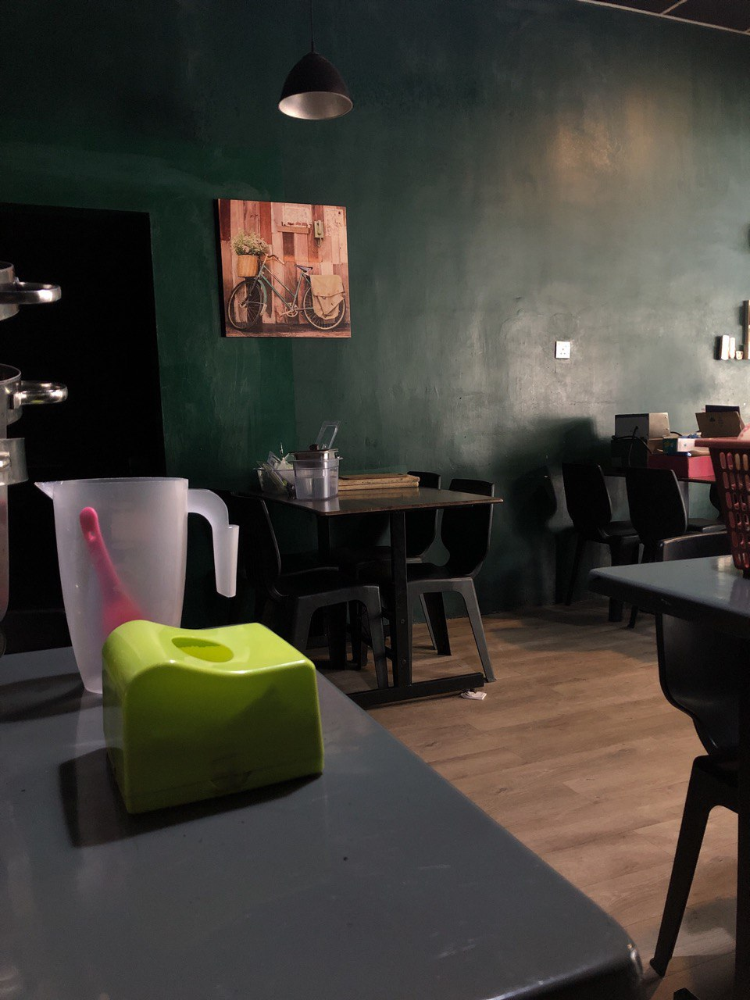
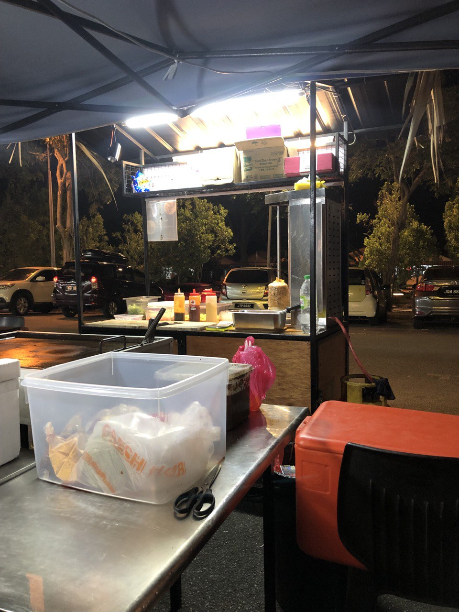
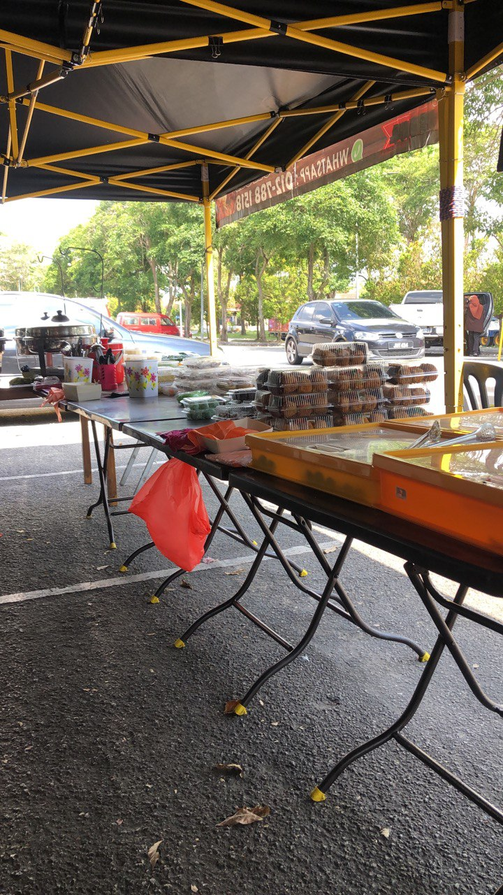

AULYANABILA BINTI ANUAR
CDIM110 | IMD 318 | RESUME

About MeAulya
Assalamualaikum and hi there! My name is Aulyanabila Binti Anuar, you can call me Aulya or Bella but I prefer you to contact me Aulya because it has a nice meaning behind it. My wish is I hope I can do my best in everything that I cherish. I hope that my youth will not go in vain even when I'm focusing on my studies. To be in my dream university is already blissful as it is so I hope I can do well happily. Communicating and trying to blend in with people is already hard enough though, but I always have that one mindset which is "if we think we are unlucky, believe or not there's going to be so many people who are unluckier than us". When we have that one mindset, we can face any problem in a good way. Aulya was born on September 30 2004, in Hospital Temenggong, Kulai, Johor. Her family consists of her parents and 6 other siblings. Aulya attended Sekolah Kebangsaan Taman Kota Kulai Elementary School, Sekolah Menengah Kebangsaan Sultan Ibrahim High School, and continuing her studies at Universiti Teknologi Mara Segamat (UiTM).
- FATHER :
- ANUAR BIN MAT ARIFFIN
- 016-7568671
- MOTHER :
- ELYAWATI BINTI YUSGAN
- 011-63743426
- SIBLINGS
- ANELYANATSYA BINTI ANUAR
- EMYLYANAZIRA BINTI ANUAR
- ANASOFIYA BINTI ANUAR
- AULYANABILA BINTI ANUAR
- ARYA RABBANI PUTRA BIN ANUAR
- AMANI UMAIRAH ZAHRAA BINTI ANUAR
Experience
- Student - Information Management (CDIM110)
Throughout my experience as an active student, I've consistently delivered impactful results, spearheading groundbreaking projects that have propelled my team to new heights. My biggest achievements include getting good grades while managing big and small events on my curriculum activities, showcasing my ability to innovate and drive success. My unique blend of creativity, strategic thinking, and problem-solving prowess sets me apart. Whether it's optimizing processes or cultivating strong client relationships, I thrive on tackling challenges head-on. My exceptional communication skills and knack for fostering collaboration across multidisciplinary teams have been instrumental in achieving organizational goals. I am excited to bring my passion, drive, and proven track record of success to any team.
- Employment History: Manager and Salesperson, Streect Crew Restaurant, Kulai
- Set up and broke down banquet tables and chairs quickly and efficiently, ensuring that all events started and ended on time
- Develop and implement health and safety policies that ensure a safe and secure workplace for staff and customers
- Created and implemented a set of internal controls to ensure accurate and timely financial reporting and reduce the risk of fraud and errors
- Established and maintained relationships with external vendors and suppliers, resulting in improved quality and delivery of products and services
   ❮ ❯
Education
| Category | Primary School | Secondary School | University |
|---|---|---|---|
| Education | SK Kota Kulai | SMK Sultan Ibrahim | UiTM |
| Achievement | UPSR - 3A's | SPM - 7A's | CGPA - 3.67 |
My Skills
Contact
Email: aulyanabila.bella@gmail.com
Phone: 011-28684469
LinkedInIf you'd like to learn more about me, feel free to explore further!
More